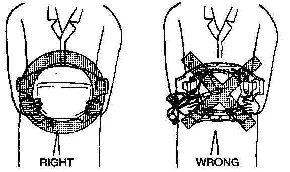
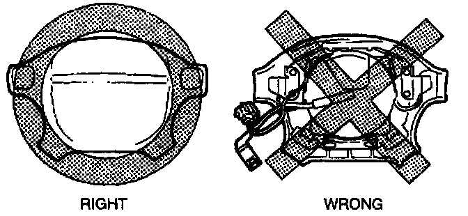

Air Bag Module Handling

A live (undeployed) air bag module may accidentally deploy when it is handled and cause serious injury. When carrying a live (undeployed) air bag module, point the front surface away from your body to lessen the chance of injury in case it deploys.

A live (undeployed) air bag module placed face down on a surface is dangerous. If the air bag module deploys, the motion of the module can cause serious injury. Always face the front surface up to reduce the motion of the module in case it accidentally deploys.